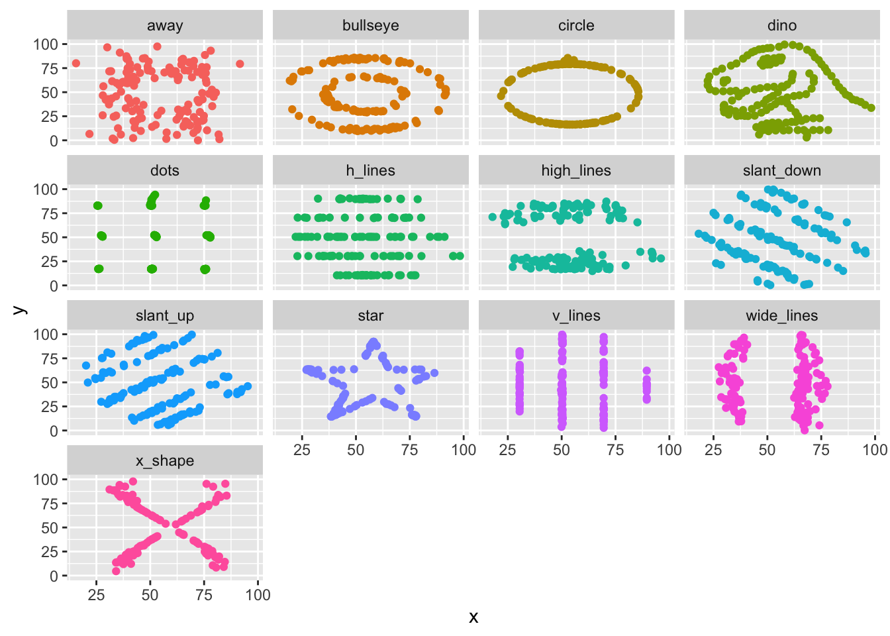
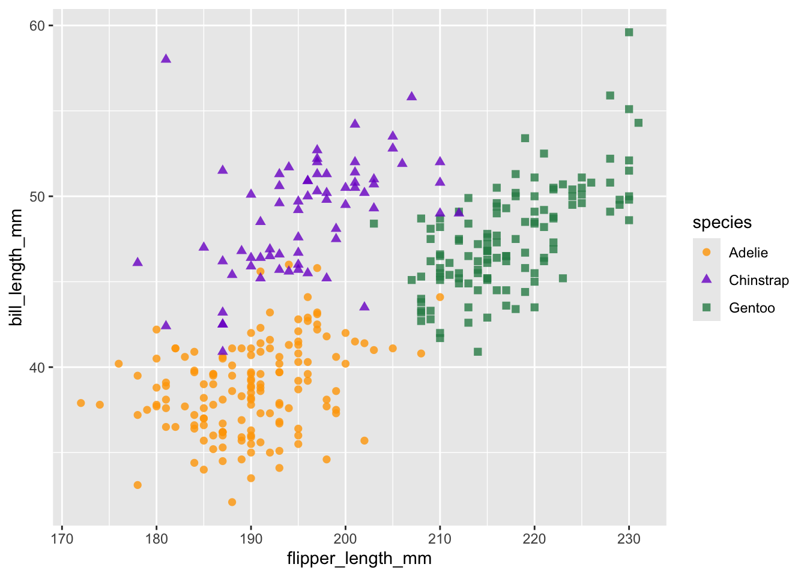
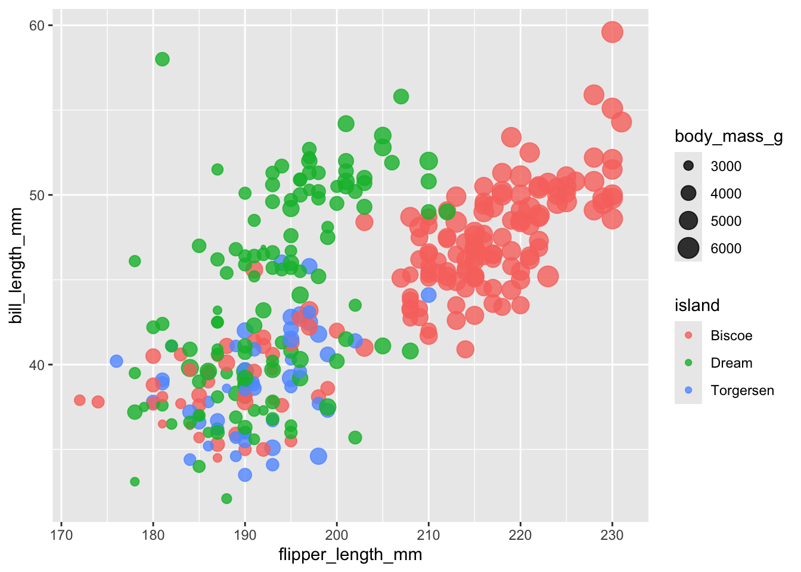

| dataset | x_mean | x_sd | y_mean | y_sd | corr |
|---|---|---|---|---|---|
| dino | 54.26327 | 16.76514 | 47.83225 | 26.93540 | -0.0644719 |
| away | 54.26610 | 16.76983 | 47.83472 | 26.93974 | -0.0641284 |
| h_lines | 54.26144 | 16.76590 | 47.83025 | 26.93988 | -0.0617148 |
| v_lines | 54.26993 | 16.76996 | 47.83699 | 26.93768 | -0.0694456 |
| x_shape | 54.26015 | 16.76996 | 47.83972 | 26.93000 | -0.0655833 |
| star | 54.26734 | 16.76896 | 47.83955 | 26.93027 | -0.0629611 |
| high_lines | 54.26881 | 16.76670 | 47.83545 | 26.94000 | -0.0685042 |
| dots | 54.26030 | 16.76774 | 47.83983 | 26.93019 | -0.0603414 |
| circle | 54.26732 | 16.76001 | 47.83772 | 26.93004 | -0.0683434 |
| bullseye | 54.26873 | 16.76924 | 47.83082 | 26.93573 | -0.0685864 |
| slant_up | 54.26588 | 16.76885 | 47.83150 | 26.93861 | -0.0686092 |
| slant_down | 54.26785 | 16.76676 | 47.83590 | 26.93610 | -0.0689797 |
| wide_lines | 54.26692 | 16.77000 | 47.83160 | 26.93790 | -0.0665752 |
Lecture 1
Tip
Lecture 1 exercises using naquiz/nareal
Power of visualization
You are provided with a table summarising several datasets. Look at the summary statistics carefully and answer the questions below based on your interpretation of the data.
Question 1
Since the datasets have nearly identical means, standard deviations, and correlations, what can you infer about the spread of points?
✗All datasets will likely have identical visual patterns
✗The datasets may have similar visual spreads but differ in shape
✓None, no conclusions about the distribution of the points can be made
Question 2
The different datasets have identical means, standard deviations, and correlations, is it safe to conclude that the spread of points to look similar in all cases? Why or why not?/ Is it possible for datasets to have identical summary statistics yet represent fundamentally different underlying distributions?
TO ADD: Question Answers
Run the following code to visualize the dino dataset.
Question 3
Have your conclusions changed based on the visualization?
All datasets visualised

Visual channels

Q1: In Figure 1 which channel(s) are used to depict species?
✗Horizontal (x-axis) position of the mark
✗Vertical (y-axis) position of the mark
✓Colour
✓Shape
✗Opacity
Q2: In Figure 1 which channel(s) are used to depict flipper length?
✓Horizontal (x-axis) position of the mark
✗Vertical (y-axis) position of the mark
✗Colour
✗Shape
✗Opacity
Q3: Using multiple visual channels to represent the same variable is known as:
✓Redundant coding
✗Dimensionality reduction

Q4: Which of the following is correct for Figure 2?
✗The size and colour of the marks represent body mass (g) and species, respectively.
✓The size and colour of the marks represent body mass (g) and island, respectively.